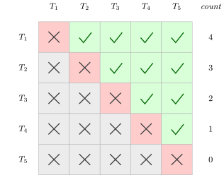

Problem statement
Five schools are sending their baseball teams to a tournament. Each team must play every other team exactly once. How many games are required in total?
General form. Given a set \(S = \{s_1, s_2, \ldots, s_n\}\) of \(n\) distinct elements, how many unordered pairs \(\{s_i, s_j\}\) with \(s_i \neq s_j\) can be formed?
We solve this three ways. Each approach reveals a different combinatorial principle, and all three land on the same answer:
\[\frac{n(n-1)}{2} = \binom{n}{2}\]
Approach 1: the concrete case \(n = 5\)
Lay out a \(5 \times 5\) table whose rows and columns are indexed by the teams \(T_1, \ldots, T_5\). A check mark in row \(T_i\), column \(T_j\) records the game between team \(i\) and team \(j\).

Reading the table.
- Diagonal (red, ✗): a team cannot play itself.
- Lower triangle (gray, ✗): the pair \((T_i, T_j)\) with \(i > j\) records the same game as \((T_j, T_i)\), so we strike it out to avoid double-counting.
- Upper triangle (green, ✓): exactly one entry per distinct unordered pair.
Counting the checks row by row gives \(4 + 3 + 2 + 1 + 0 = 10\) games.
Approach 2: row-by-row generalization
The same table works for any \(n\). In row \(T_k\), the cell in column \(T_j\) is a check exactly when \(j > k\), so row \(T_k\) contributes \(n - k\) unordered pairs.
For row \(T_k\), any element up to and including \(T_k\) itself cannot be considered: the diagonal cell (\(T_k\) playing itself) is excluded, and all cells with \(j < k\) are already accounted for in earlier rows. Only the \(n - k\) entries with \(j > k\) contribute.
Summing over all rows:
\[ \begin{aligned} \text{Total} &= \sum_{k=1}^{n} (n - k) = (n-1) + (n-2) + \cdots + 1 + 0 \\ &= \sum_{k=1}^{n} n - \sum_{k=1}^{n} k = n \cdot n - \frac{n(n+1)}{2} = \frac{2n^2 - n(n+1)}{2} = \frac{n(n-1)}{2}. \end{aligned} \]
Sanity check. For \(n = 5\): \(\dfrac{5 \cdot 4}{2} = 10\). ✓
Approach 3: count ordered pairs, then divide
Forget the table. Think of building a pair by filling two labeled slots in sequence.
- The first slot can be filled in \(n\) ways (any element of \(S\)).
- Once the first slot is fixed, the second slot can be filled in \(n - 1\) ways: any element except the one already chosen (since the pair must contain two different elements).
Therefore the number of ordered pairs of distinct elements is \(n(n-1)\).
Each unordered pair \(\{s_i, s_j\}\) corresponds to exactly two ordered pairs, namely \((s_i, s_j)\) and \((s_j, s_i)\). The count \(n(n-1)\) therefore double-counts every unordered pair, and we recover the unordered count by dividing by the size of the symmetry group (\(2\)):
\[\text{unordered pairs} = \frac{n(n-1)}{2}.\]
This is a special case of a general rule: when every object is counted the same number of times \(m\), divide by \(m\).
Result
\[\binom{n}{2} = \frac{n(n-1)}{2}.\]
For the baseball tournament with \(n = 5\) teams: \(\dbinom{5}{2} = \dfrac{5 \cdot 4}{2} = 10\) games.
Cross-check: small values
| \(n\) | Row-sum \(\sum_{k=1}^{n}(n-k)\) | Ordered\(/2\) = \(n(n-1)/2\) | \(\binom{n}{2}\) |
|---|---|---|---|
| \(2\) | \(1 + 0 = 1\) | \(2 \cdot 1/2 = 1\) | \(1\) |
| \(3\) | \(2 + 1 + 0 = 3\) | \(3 \cdot 2/2 = 3\) | \(3\) |
| \(4\) | \(3 + 2 + 1 + 0 = 6\) | \(4 \cdot 3/2 = 6\) | \(6\) |
| \(5\) | \(4 + 3 + 2 + 1 + 0 = 10\) | \(5 \cdot 4/2 = 10\) | \(10\) |
| \(6\) | \(5+4+3+2+1+0 = 15\) | \(6 \cdot 5/2 = 15\) | \(15\) |
All three columns agree, as they must.
Conclusion
The number of unordered pairs of distinct elements drawn from an \(n\)-element set is \(\binom{n}{2} = \dfrac{n(n-1)}{2}\).
We proved this three ways:
- Concrete table (\(n = 5\)): count check marks in the upper triangle.
- Row-by-row sum: row \(T_k\) contributes \(n - k\) pairs; summing yields \(n^2 - \frac{n(n+1)}{2} = \frac{n(n-1)}{2}\).
- Division principle: \(n(n-1)\) ordered pairs, each unordered pair counted twice, so divide by \(2\).
The three viewpoints — enumerate carefully, sum a pattern, overcount and divide — are the standard combinatorial moves and recur throughout the subject.
The number \(\binom{n}{2}\) counts:
- the edges of the complete graph \(K_n\) on \(n\) vertices
- the handshakes exchanged when \(n\) people each shake hands with every other person once
- the number of \(2\)-element subsets of an \(n\)-set
- the \(n\)-th triangular number \(T_{n-1} = 1 + 2 + \cdots + (n-1)\)
The third approach extends immediately: the number of unordered \(r\)-subsets of an \(n\)-set is
\[\binom{n}{r} = \frac{n(n-1)(n-2)\cdots(n-r+1)}{r!},\]
obtained by counting ordered \(r\)-tuples of distinct elements (\(n(n-1)\cdots(n-r+1)\) of them) and dividing by the number of orderings of each \(r\)-subset (\(r!\)). For \(r = 2\) this recovers \(\frac{n(n-1)}{2}\).